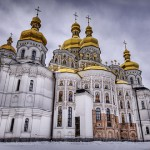
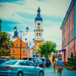
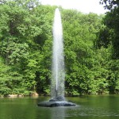
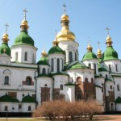
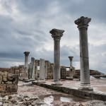
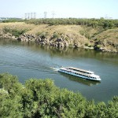
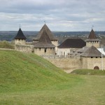

Києво-Печерська Лавра
Сьогодні Національний Києво-Печерський історико-культурний заповідник – найбільший музейний комплекс України, де зосереджено 144 споруди...
Перейти

Місто Кам’янець
Кам’янець-Подільський хоч не є обласним центром, проте займає третє місце після Києва та Львова за кількістю пам’яток старовини і культури...
Перейти

Софіївка
Національний дендрологічний парк „Софіївка” – одне з найвидатніших творінь світового садово-паркового мистецтва кінця ХVІІІ – першої половини ХІХ ст...
Перейти

Софія Київська
Софія – це справжня культурна скарбниця: тут і архітектура, і скульптура, і малярство, і ювелірне мистецтво зібрані в один потужний акорд...
Перейти

Херсонес Таврійський
Історія Херсонеса є частиною історії Давньої Греції, Давнього Риму, Візантії, Київської Русі...
Перейти

Хортиця
Острів Хортиця – найбільший острів на Дніпрі, унікальність якого – у рідкісному поєднанні на одній території різноманітних природних комплексів, пам’яток геології, культури, історії...
Перейти

Хотинська фортеця
Хотинська фортеця – свідок численних війн та баталій. Протягом століть вона була центром розвитку ремесел і торгівлі, культури та економіки. Ця середньовічна красуня може багато розповісти тому, хто побажає вислухати її...
Перейти